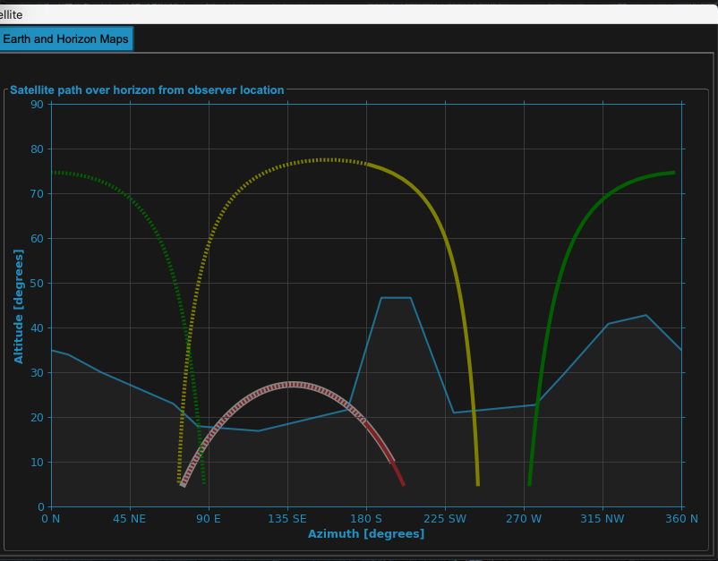
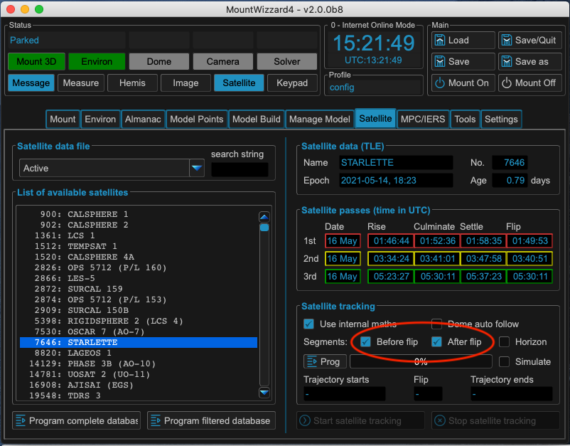
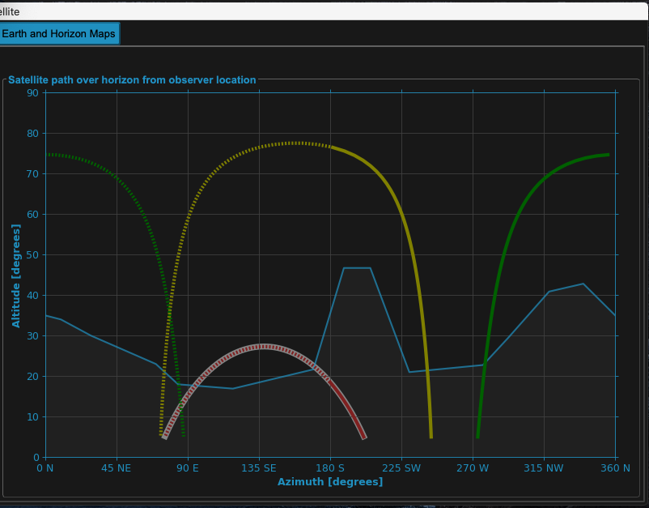

Satellite tracking¶
MountWizzard4 supports the mount capability of tracking satellites. The planning is based on Two Line Elements (TLE), which are provided by organisations (e.g. http://www.celestrak.com) and deliver a set of orbital parameters for calculating the satellite track with regard to your location in Alt / Az coordinates. Since the introduction, 10micron does the calculation internally. Therefore it is needed to upload the satellite TLE data to the mount and let it calculate. Before FW 3.x this is the only possibility (using the internal satellite database works similar) to do tracking.
Note
As the orbital elements of a satellite change over time, it is necessary to get most actual data for get a good tracking. Data which is older than 10 days is definitely outdated. MountWizzard4 marks them red. Older than 3 days may work, MountWizzard4 marks them yellow. Ideal is to get them right in time.
You could select different databases on the right upper part of “Searching Database” tab {1}. Once selected and online enabled, MountWizzard4 will download the newest data and offers the list of included satellites. For finding the satellite of your choice you could use the search field (2) to reduce the list. The string is not case sensitive and will be stored persistent.
{kind=link}
There are many more selection criteria available to filter the list of satellites with real-time calculations of some properties like velocity, distance and a glimpse of the apparent magnitude. This calculation takes some time and you will see a yellow frame and progress counter in the filter area.
{kind=link}
Once you choose a satellite with double click, data is programmed to mount controller, parameters are displayed, MountWizzard4 calculated the next 3 orbits of the satellite with rise / culminate / settle and if it occurs the flip time when crossing the meridian.
{kind=link}
The selected satellite will also be shown in the Satellite window:
{kind=link}
After the mount has done it’s calculations as well, the result will be shown in the Trajectory starts and Trajectory ends fields and a possible flip will be announced on the “Run Tracking” tab, MountWizzard4 offers now (need Firmware 3.x) some adjustments for centering the satellites in you imaging FOV.
{kind=link}
As soon as a valid tracking path is present in the mount, the Start satellite tracking and Stop satellite tracking button are enabled. Once started, the mount will slew to the begin of the tracking path and wait for the satellite to rise. Selecting partial tracks and respecting constraints is not possible.
Since FW 3.x the command protocol offers the programming of a custom satellite track. This offers the capability of takings care of avoiding flips, respect horizon and other constraints. The operation is different to the classic approach: Instead of programming TLE data to the mount, MountWizzard4 programs Alt / Az coordinates in a one second interval to the mount (max. 900s) which the mount after start tracking will follow. You could enable this feature with checking Use internal maths if the firmware is 3.x or higher. After enabling, additional elements will be enabled.
{kind=link}
As the calculation now happens outside the mount, we could take a look to the difference between tracks calculated by the 10micron mount and MountWizzard4 based on the same satellite TLE data! You will find some comparison under the architecture / math section: precision of internal calculations.
If you are using the internal math as well as classic mode, you could open the satellite window. There you could see the next three orbits and for internal math the resulting satellite track with an white underlay. If you change any setup, MountWizzard4 will recalculate all data and updates the plots accordingly.
Note
The solid line shows the track before meridian transit, the dotted line the track after meridian transit. The resulting white background shows the resulting track, which takes flip track tolerance into account. If you change settings in satellite (or even limits), MountWizzard4 will update the tracks path in plot accordingly and reset the prog state.
Select only a segment before a meridian transit (and therefore avoiding a flip during tracking):
{kind=link}
{kind=link}
Select only a segment after a meridian transit (and therefore avoiding a flip during tracking):
{kind=link}
{kind=link}
Select both segments of the meridian (this might cause a flip during tracking):
 {kind=link}
{kind=link}
Select respecting the horizon line. This filters out additional all segments, which are below the given horizon mask.
{kind=link}
{kind=link}
MountWizzard4 will take into account the meridian track limits of your mount. Here set to 1 degree (which is close to meridian)
{kind=link}
{kind=link}
MountWizzard4 will take into account the meridian track limits of your mount. Here set to 15 degrees (which could avoid a meridian flip or at least extend the tracking time)
{kind=link}
{kind=link}
Warning
The meridian track limits have to be chosen carefully as the mount might hit your setup !
The biggest change in using satellite tracking with the new implementation is how the data is handled to the mount: whereas in classic mode only the TLE data has to be uploaded (which is quick) now the whole track coordinates have to be programmed . As this takes up to 10 seconds, MountWizzard4 does not automatically start the transfer. Once your setup (choice of segment, horizon etc.) is made, you have to start the programming by pushing the Prog button.
{kind=link}
After a successful upload, the trajectory data is populated and the Start / Stop tracking buttons are enable like in classic mode.
{kind=link}